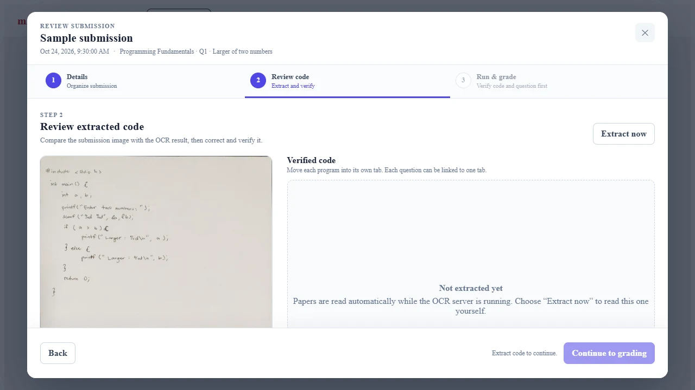
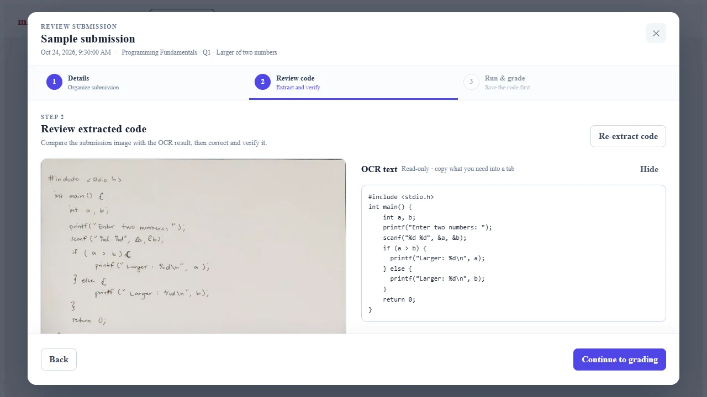
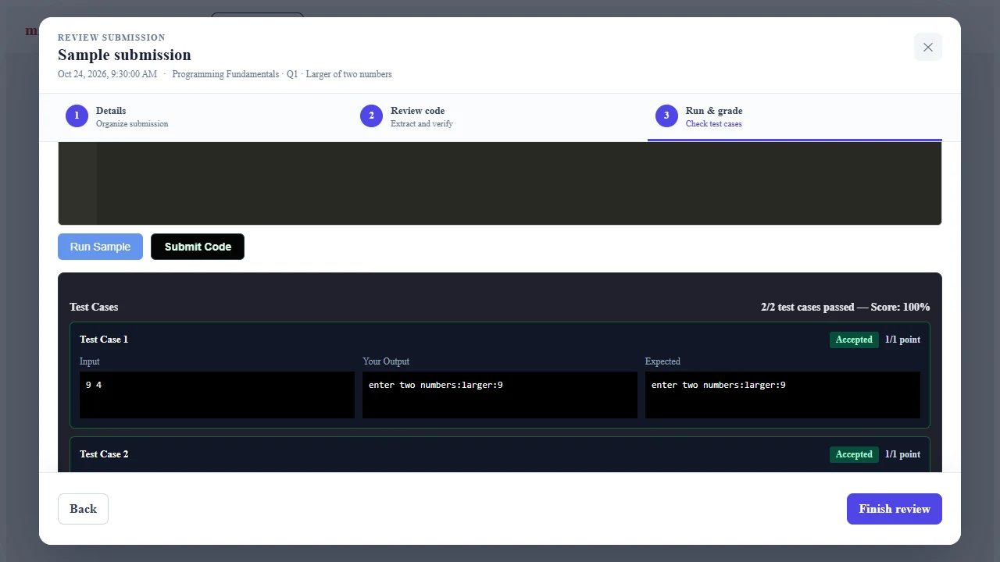

Project / Case study
mAIstra
A web and mobile teaching system that extracts handwritten C code with OCR, supports teacher review, executes verified code, and records grades.
mAIstra helps instructors work through handwritten C programming submissions, from the captured page to a recorded grade. Teachers can compare the image with extracted code, correct it, and run verified code against test cases before saving their assessment.
- Role
- Team project · Submission review and grading
- Built with
- Angular 21 · TypeScript · Flutter · Python · FastAPI · OpenCV · PaddleOCR · Supabase · Judge0
Project walkthrough

Problem
Connect an instructor-facing review flow to remote code execution while keeping submission and grading state coherent.
The Flutter app captures handwritten C submissions and uploads them to Supabase. A Python FastAPI service preprocesses the images with OpenCV and extracts code with PaddleOCR. Instructors review and verify the extracted code in Angular before running it against question test cases through Judge0 and saving the grade.
My contribution
Built the web submissions, code-review, and grading interface; integrated Judge0 execution; and implemented the Supabase persistence layer.
Ownership boundary. Team project; Jayrald owned the web submissions, review, and grading interface, the Judge0 integration, and the Supabase data layer.
The pipeline describes the full team system: mobile capture and OCR extraction were developed by teammates. Jayrald's contribution covers web submission review, grading, Judge0 integration, and Supabase persistence.
How it works
-
1. Capture and upload
The Flutter mobile app captures handwritten C code and uploads the submission image to Supabase for extraction and review.
-
2. Prepare the image
The FastAPI OCR service uses OpenCV to resize the image, convert it to grayscale, and reduce noise before recognition.
-
3. Extract with PaddleOCR
A PP-OCRv6 detector locates text, and a fine-tuned recognizer reads the handwriting. Low-confidence detections are filtered before the text is reconstructed.
-
4. Reconstruct the code
Detected text is grouped into lines in reading order. Conservative cleanup corrects misread C keywords and include directives, and the extracted code is saved in Supabase.
-
5. Review and verify
The Angular review interface places the image beside editable code. The teacher checks and corrects the extraction, with OCR output kept separate from verified code.
-
6. Execute and grade
Verified code runs against the selected question's test cases through Judge0. Execution results return to the review interface, and the final grade is recorded in Supabase.
Engineering choices
| Decision | Why | Tradeoff |
|---|---|---|
| Isolate remote execution behind a Judge0 integration boundary. | The review interface needed execution results without taking responsibility for running untrusted code itself. | The workflow depends on a remote execution service and must surface its failure states clearly. |
| Use Supabase as the shared persistence layer for review and grading state. | Submission context and the resulting grade needed one source of truth across the review sequence. | Interface behavior stays coupled to the agreed data shape and access rules. |
In use
Real Angular interface capture showing Extract now, the OCR result, teacher verification, and grading. The OCR result was produced by the local PaddleOCR service on an anonymous handwritten sample and is replayed with shortened waiting time. Storage and grading use isolated demo fixtures; Flutter mobile capture is not shown.
-
Extract handwritten code
Extract the code: a handwritten submission starts with no extracted text. Extract now runs the OCR step before code can be verified. -
Review OCR output

Review the OCR output: the read-only panel preserves the extracted text beside the photograph while the teacher prepares separate verified code. -
Run and grade

Run and grade: isolated demo execution results return to the review surface, where two accepted test cases produce a recorded 100% score.
Outcome
The instructor flow connects a handwritten submission, OCR-extracted code, teacher verification, execution results, and a recorded grade in one interface.
Evidence. The captured sequence starts with an unprocessed handwritten submission, triggers extraction, displays a real local PaddleOCR result, verifies the code, and shows two accepted demo test cases with a recorded 100% grade.
Current limits. OCR output comes from a real local run on an anonymous sample and is replayed in the interface with shortened waiting time. Submission storage and grading responses use isolated demo fixtures. Mobile capture is not shown, and this example does not establish general OCR accuracy, live-service reliability, or classroom adoption.